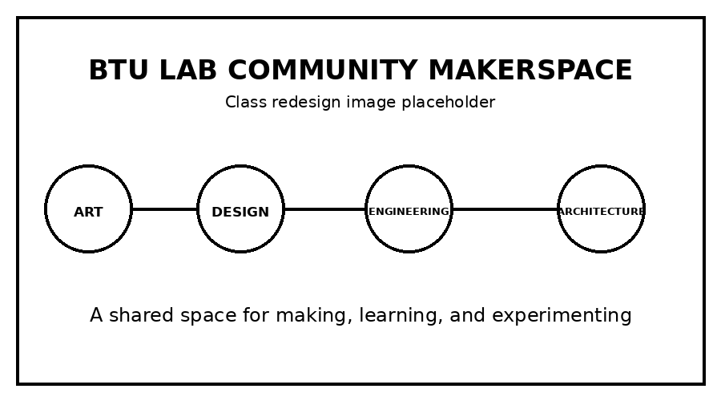

Who Can Use the Lab?
BTU supports CU Boulder students and tries to create a diverse and inclusive environment for many kinds of makers. The lab is currently unable to sponsor BuffOne Guest Cards because of campus security requirements.
Blow Things Up
Blow. Things. Up.
The ATLAS BTU Lab is a shared makerspace for projects that connect art, design, engineering, and architecture. It works as both a general project space and a place for classes, training, and workshops.

BTU supports CU Boulder students and tries to create a diverse and inclusive environment for many kinds of makers. The lab is currently unable to sponsor BuffOne Guest Cards because of campus security requirements.
New members attend a general orientation that lasts about 20 minutes. It covers community expectations, safety, and basic equipment. Some areas, including the wood shop and laser cutters, require separate orientations.
Use the Events and Workshops page to find the official BTU calendar and information about tool-specific training.
General questions can be sent to atlasbtulab@gmail.com.